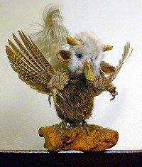

 Bon là honnêtement je ne sais plus quoi inventer pour pondre du texte, alors je vais vous raconter l'histoire d'une carotte. Mais pas n'importe quelle carotte. Une carotte magique !
Bon là honnêtement je ne sais plus quoi inventer pour pondre du texte. Ah ? Voulez la suite ? Cette carotte magique donnait à quiconque la mangerait une résistance infinie. Nul couteau, nulle balle, ne pourait alors le transpercer.
Le seul problème c'est que la carotte elle même avait se pouvoir. Et nul objet tranchat, nul scie sauteuse, tronsonneuse, disqueuse laser à percussion rotative, perce-tunel en diamant, sabre laser, explosion atomique... ne pouvait en venir à bout.
La vérité vraie, c'est que personne ne connais le vrai pouvoir de cette carotte car tout le monde crois que sa seule propriété est... de casser les dents de tous ceux qui la croquent